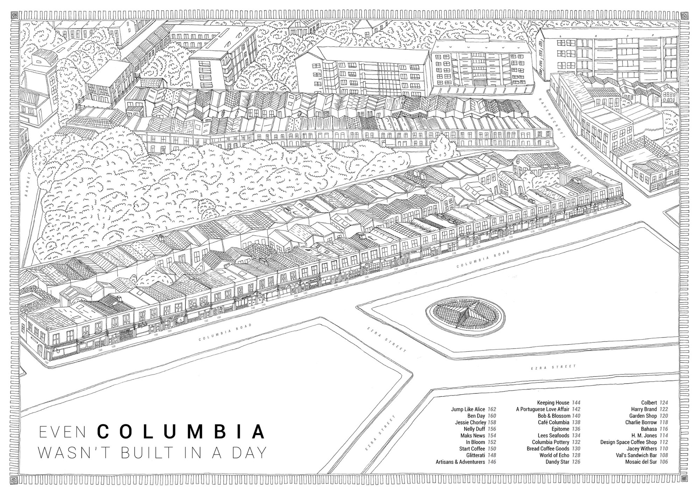
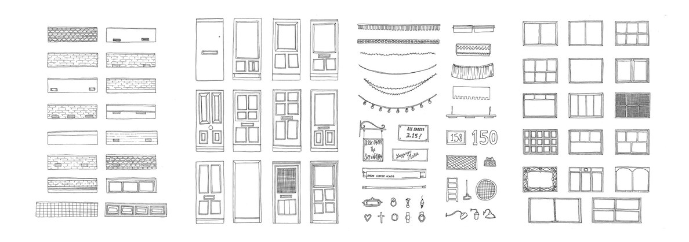
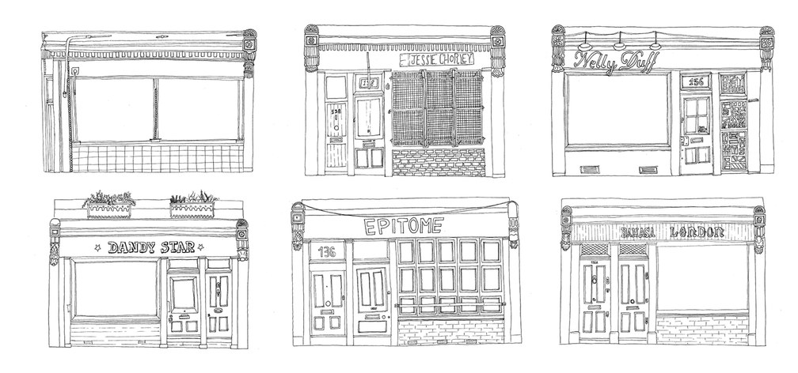
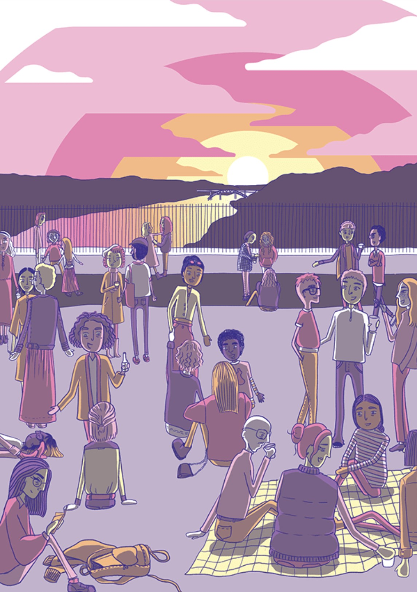
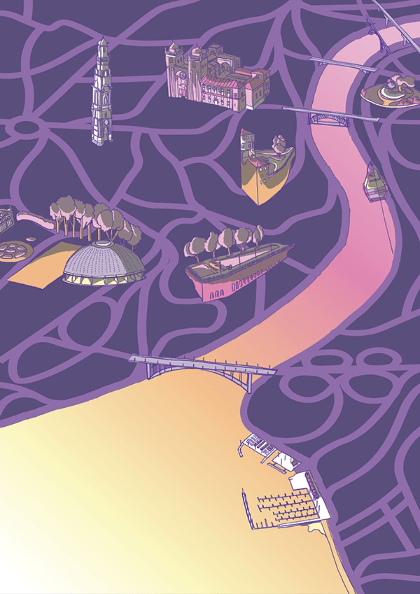
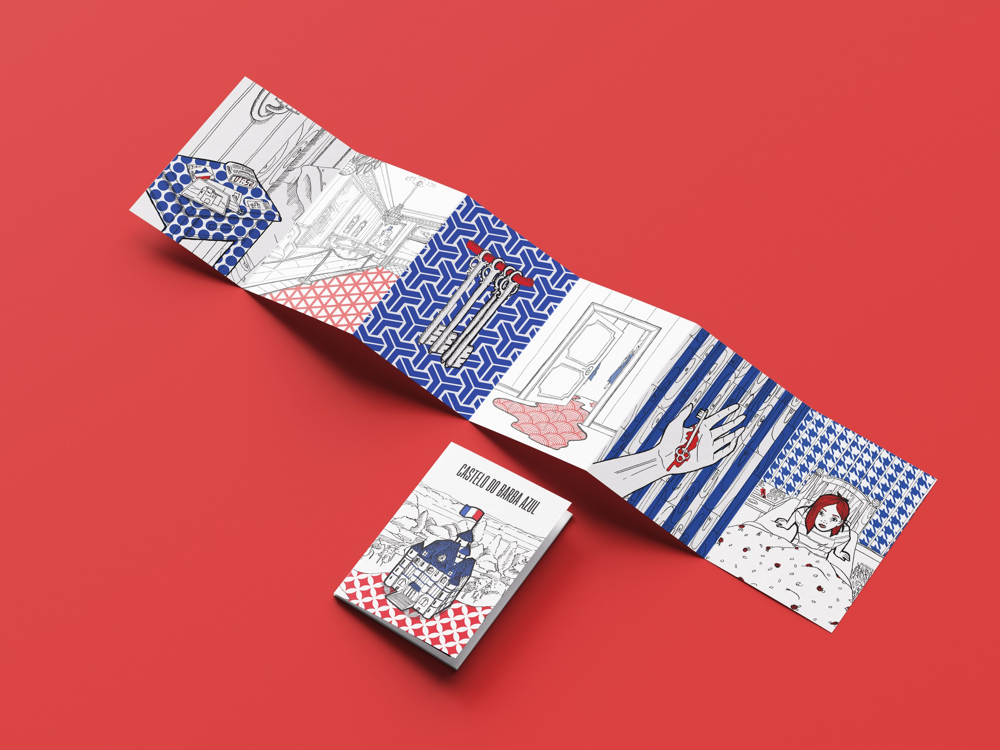

selected illustration
Why maps
Over the years I found myself being challenged to conceive and illustrate real and fictional maps, and acquired a taste for it.
How I work
Starting from real-life locations, sketches or text descriptions, I always like having stories and context so I can start to get a visual direction for what style to go for in illustration.
Herdade do Aragão
Commissioned by Grupo Editorial Presença, the book’s publisher: an illustration of the villa and town where Raul Minh’Alma’s Fomos mais do que um erro is set, printed as a postcard and a poster for the book’s launch box set.

Even Columbia wasn’t built in a day
India-ink illustrated map of Columbia Road, in London, based on location pictures.



Viewpoints in Porto
Front and back of a printed map of viewpoints in Porto.


Bluebeard
Castelo do Barba Azul: a fold-out illustrated zine of the Bluebeard tale.
